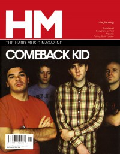

Comeback Kid
|  |
| January 2005 HM |
Media coverage:
- Jan 2003 in HM "Hardnews: Comeback Kid", by Daniel Isaac
- Jul 2004 in HM "Poster: Comeback Kid"
- Jan 2005 in HM "The Comeback Kid Story", by David Allen
- Spr 2007 in Uprise Zine "Featured Bands: Comeback Kid"
- May 2007 in HM "With Bloodshot Eyes And Sore Wrists", by Seth Werkheiser
- Sep 2010 in HM "Comeback Kid", by Jeff Cunningham
- Mar 2014 in HM "True To Their Name: How Comeback Kid Managed to Write One of the Best Records of the Year", by Collin Simula
Albums & reviews:
2003: Turn It Around
- May 2003 in HM, by Chris Francz
- May 2005 in HM, by Kern County Kid
- May 2007 in HM, by Doug Van Pelt
- Mar 2009 in HM, by David Stagg
- Mar 2014 in HM, by Justin Mabee

© 2011 CMnexus. Last updated September 2019. Contact: editor -AT- cmnexus -DØT- org About